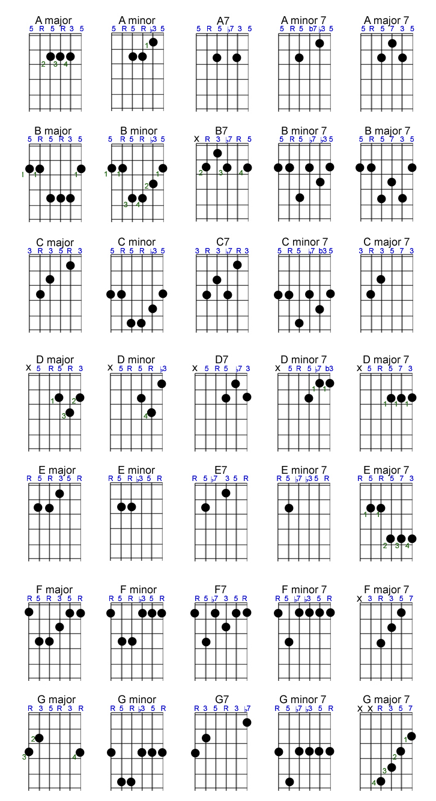

Las tablaturas de guitarra son una forma sencilla de escribir la música para este instrumento. Cada línea representa una cuerda de la guitarra, y los números indican en qué traste colocar los dedos. Esto permite tocar canciones sin necesidad de leer partituras tradicionales.
Un acorde es un grupo de notas que se tocan al mismo tiempo y crean un sonido armonioso. En la guitarra, cada acorde tiene una posición específica en el diapasón que determina qué cuerdas tocar y en qué trastes.
